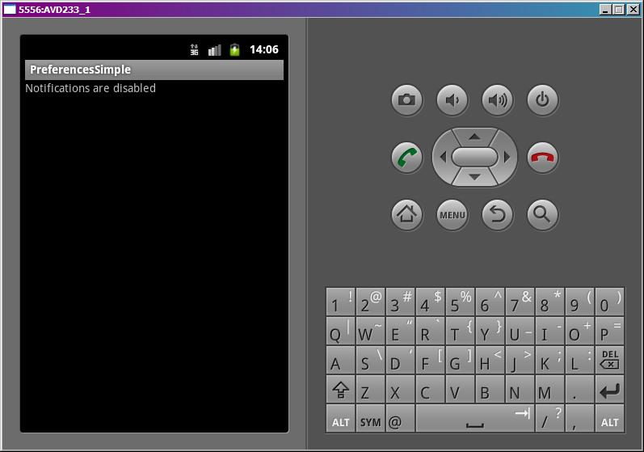
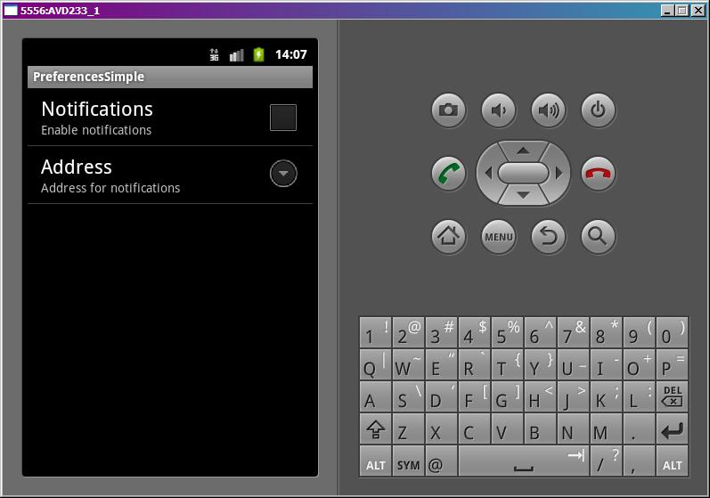
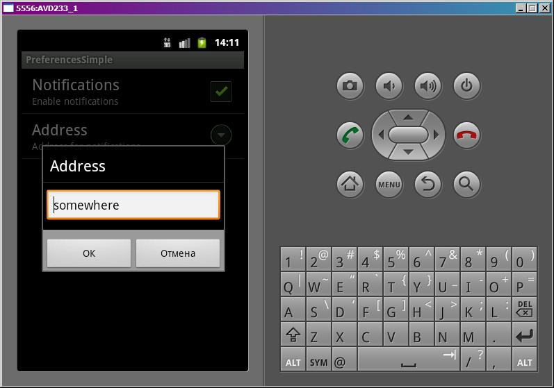

В этом уроке:
- используем Preferences для работы с настройками приложения
Мы уже проходили Preferences, использовали их для хранения своих данных, знаем механизм. Теперь посмотрим, как они используются для хранения настроек приложения. Android предоставляет специальное Activity для работы с настройками – PreferenceActivity. Оно умеет читать определенные xml-файлы и создавать из них экран с настройками.
Создадим простое приложение. На первом экране будем читать и отображать настройки приложения, а на втором будем их задавать с помощью PreferenceActivity.
Надо придумать какие-нибудь настройки. Пусть это будут настройки неких уведомлений, а именно возможность включить/выключить уведомления (чекбокс) и возможность прописать адрес получателя (поле для ввода текста).
Создадим проект:
Project name: P0711_PreferencesSimple
Build Target: Android 4.0
Application name: PreferencesSimple
Package name: ru.startandroid.develop.p0711preferencessimple
Create Activity: MainActivity
Сначала создадим xml-файл с описанием настроек. В папке res создаем папку xml, а в ней создаем файл pref.xml:
<?xml version="1.0" encoding="utf-8"?>
<PreferenceScreen
xmlns:android="http://schemas.android.com/apk/res/android">
<CheckBoxPreference
android:key="notif"
android:summary="Enable notifications"
android:title="Notifications">
</CheckBoxPreference>
<EditTextPreference
android:key="address"
android:summary="Address for notifications"
android:title="Address">
</EditTextPreference>
</PreferenceScreen>Здесь мы указали, что наш экран настроек (PreferenceScreen) будет содержать чекбокс (CheckBoxPreference) и поле (EditTextPreference) для ввода значения. Параметры: key – ключ для сохранения/чтения, summary – текст-пояснение, title – заголовок. Далее увидим, что и где используется.
Создаем Activity для настроек. PrefActivity.java:
package ru.startandroid.develop.p0711preferencessimple;
import android.os.Bundle;
import android.preference.PreferenceActivity;
public class PrefActivity extends PreferenceActivity {
@Override
protected void onCreate(Bundle savedInstanceState) {
super.onCreate(savedInstanceState);
addPreferencesFromResource(R.xml.pref);
}
}Вместо setContentView используется метод addPreferencesFromResource, который берет файл pref.xml и по нему создает экран настроек.
Не забудьте добавить это Activity в манифест. Тут никаких особенностей, все как обычно.
Рисуем экран main.xml:
<?xml version="1.0" encoding="utf-8"?>
<LinearLayout
xmlns:android="http://schemas.android.com/apk/res/android"
android:layout_width="fill_parent"
android:layout_height="fill_parent"
android:orientation="vertical">
<TextView
android:id="@+id/tvInfo"
android:layout_width="wrap_content"
android:layout_height="wrap_content"
android:text="">
</TextView>
</LinearLayout>Одно TextView, которое будет читать и отображать настройки приложения.
MainActivity.java:
package ru.startandroid.develop.p0711preferencessimple;
import android.app.Activity;
import android.content.Intent;
import android.content.SharedPreferences;
import android.os.Bundle;
import android.preference.PreferenceManager;
import android.view.Menu;
import android.view.MenuItem;
import android.widget.TextView;
public class MainActivity extends Activity {
TextView tvInfo;
SharedPreferences sp;
/** Called when the activity is first created. */
public void onCreate(Bundle savedInstanceState) {
super.onCreate(savedInstanceState);
setContentView(R.layout.main);
tvInfo = (TextView) findViewById(R.id.tvInfo);
// получаем SharedPreferences, которое работает с файлом настроек
sp = PreferenceManager.getDefaultSharedPreferences(this);
// полная очистка настроек
// sp.edit().clear().commit();
}
protected void onResume() {
Boolean notif = sp.getBoolean("notif", false);
String address = sp.getString("address", "");
String text = "Notifications are "
+ ((notif) ? "enabled, address = " + address : "disabled");
tvInfo.setText(text);
super.onResume();
}
public boolean onCreateOptionsMenu(Menu menu) {
MenuItem mi = menu.add(0, 1, 0, "Preferences");
mi.setIntent(new Intent(this, PrefActivity.class));
return super.onCreateOptionsMenu(menu);
}
}В onCreate мы находим TextView и получаем объект для работы с настройками - SharedPreferences. Он нам знаком, мы с ним работали ранее в уроке про Preferences. Далее идет закоментированный код полной очистки настроек приложения. Мы его не используем, я на всякий случай указал, может кому понадобится.
В onResume мы читаем из SharedPreferences настройки и выводим их в TextView. При чтении используем те самые ключи, которые прописывали в xml-файле в атрибутах key.
В onCreateOptionsMenu просто настраиваем меню для вызова окна настроек. Мы создаем пункт меню и вешаем на него Intent - в итоге при нажатии вызовется Activity.
На всякий случай уточню, почему для вывода инфы на экран здесь использую onResume, а не onCreate. Потому что, когда мы будем возвращаться с экрана настроек в главное окно, то onCreate главного окна не сработает (т.к. окно уже создано и висит в памяти) и изменения мы не увидим. А onResume точно сработает.
Все сохраняем и запускаем приложение. Видим такой экран:

По умолчанию, если настройки еще не заданы, мы получаем false и пустую строку, как и указывали в методах getBoolean и getString в onResume.
Жмем menu и переходим к настройкам.

То, что мы указывали в pref.xml система прочитала и сама создала экран настроек. Теперь мы можем здесь указывать нужные нам значения и они сразу же будут сохраняться без всяких кнопок Save. Впрочем, это стандартное поведение Android-настроек. Думаю, каждый из вас когда-нить копался в настройках и знает это.
Давайте включим наши уведомления
и пропишем адрес

Жмем ОК.
Жмем кнопку назад, попадаем на главный экран
который в onResume прочел свежие настройки и отобразил их.